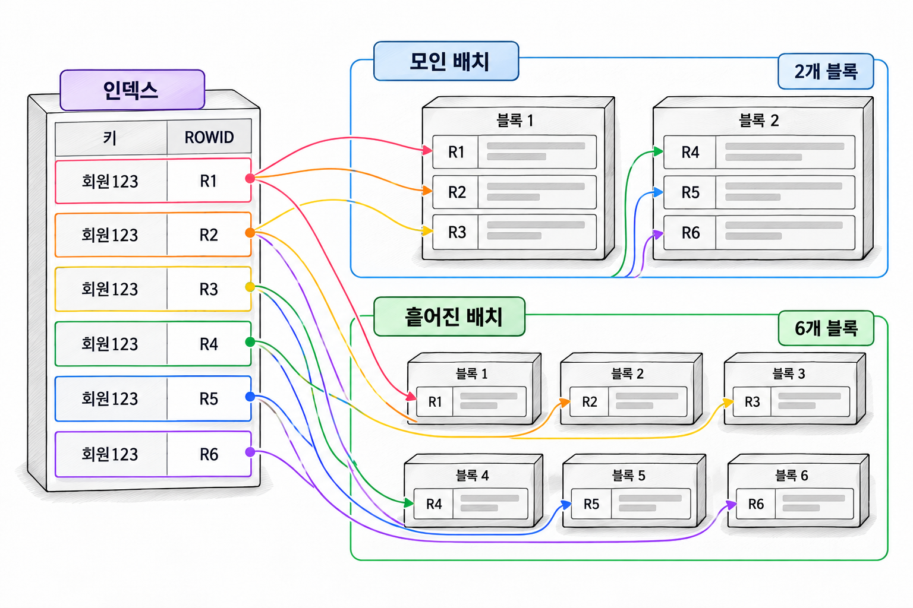

14장. 테이블 접근 최소화란?
1. 인덱스 이후의 테이블 접근
1.1 ROWID 접근과 반복 블록 방문
인덱스에서 조건에 맞는 항목을 찾았다고 조회가 끝나는 것은 아닙니다. 필요한 컬럼이 인덱스에 없으면 ROWID로 테이블에 접근해야 합니다. 이때 읽는 단위는 행이 아니라 블록입니다.
주문번호와 회원번호가 들어 있는 인덱스로 회원의 주문을 찾는다고 가정합니다. 조회할 주문금액이 인덱스에 없다면 인덱스에서 얻은 ROWID마다 해당 테이블 행을 찾아야 합니다.
문제는 여러 ROWID가 가리키는 블록의 배치입니다. 주문 100건이 몇 개 블록에 모여 있을 수도 있고, 서로 다른 블록에 흩어져 있을 수도 있습니다. 흩어져 있다면 같은 건수를 조회해도 더 많은 블록에 접근합니다.

테이블 블록이 버퍼 캐시에 있으면 물리적 읽기를 피할 수 있습니다. 그러나 캐시에 있는 블록에 반복 접근하는 작업도 비용이 듭니다. 물리적 읽기가 적다는 이유만으로 테이블 접근 비용이 작다고 판단해서는 안 됩니다.
실행 계획에서는 주로 TABLE ACCESS BY INDEX ROWID로 나타납니다. TABLE ACCESS BY INDEX ROWID BATCHED가 나타날 수도 있습니다. 이 방식은 여러 ROWID를 모아 블록 순서를 고려해 접근합니다. 같은 블록을 반복 방문하는 부담을 줄이려는 방식입니다. 다만 테이블 방문 자체가 없어지는 것은 아닙니다. Oracle Database 21c SQL Tuning Guide
1.2 선택도와 클러스터링 팩터
선택도는 조건을 만족하는 행의 비율입니다. 전체 주문 100만 건 중 100건을 찾는 조건과 30만 건을 찾는 조건은 테이블 접근량부터 다릅니다.
하지만 조건을 만족하는 행의 비율만으로 인덱스 접근 비용을 설명할 수는 없습니다. 해당 행이 테이블 블록에 어떻게 배치되어 있는지도 영향을 줍니다.
클러스터링 팩터는 인덱스 순서와 테이블 행 배치의 관련성을 나타내는 통계입니다. 인덱스 항목을 순서대로 따라갈 때 테이블 블록이 얼마나 자주 바뀌는지와 관련됩니다.
| 클러스터링 팩터의 경향 | 테이블 행 배치 | 범위 조회에서 예상되는 경향 |
|---|---|---|
| 테이블 블록 수에 가까움 | 인접한 인덱스 키의 행이 같은 블록에 모임 | 비교적 적은 블록에 접근 |
| 테이블 행 수에 가까움 | 인접한 인덱스 키의 행이 여러 블록에 흩어짐 | 블록 방문과 재방문이 증가 |
클러스터링 팩터는 인덱스마다 다릅니다. 같은 테이블이라도 주문일시 인덱스와 회원번호 인덱스는 서로 다른 값을 가질 수 있습니다.
클러스터링 팩터를 특정 SQL의 실제 읽기 횟수로 해석하면 안 됩니다. 전체 인덱스에 대한 통계이므로 특정 조회 구간의 배치와는 차이가 날 수 있습니다. 캐시 상태와 배치 ROWID 접근도 실제 비용에 영향을 줍니다.
인덱스를 재구성해도 테이블 행의 배치는 바뀌지 않습니다. 따라서 재구성만으로 클러스터링 팩터가 개선된다고 기대해서는 안 됩니다. Oracle Database 21c Database Concepts
1.3 같은 반환 건수에서 달라지는 읽기량
같은 데이터를 서로 다른 순서로 저장한 두 테이블을 비교합니다. 회원마다 주문은 50건이며, 주문금액과 상태도 같습니다. 차이는 행을 적재한 순서입니다.
다음 예제는 이 장에서만 사용하는 객체를 만듭니다. 해당 객체가 없는 실습 스키마에서 한 번 실행합니다.
예제 14-1 — 같은 주문 데이터를 다른 순서로 저장하기
파일명: ch14_prepare.sql
CREATE TABLE ch14_orders_near (
order_id NUMBER NOT NULL,
customer_id NUMBER NOT NULL,
order_status VARCHAR2(10) NOT NULL,
amount NUMBER(12, 2) NOT NULL,
memo VARCHAR2(200) NOT NULL
);
CREATE TABLE ch14_orders_scatter (
order_id NUMBER NOT NULL,
customer_id NUMBER NOT NULL,
order_status VARCHAR2(10) NOT NULL,
amount NUMBER(12, 2) NOT NULL,
memo VARCHAR2(200) NOT NULL
);
INSERT INTO ch14_orders_near (
order_id, customer_id, order_status, amount, memo
)
SELECT n,
CEIL(n / 50),
CASE
WHEN MOD(n, 10) = 0 THEN 'READY'
ELSE 'DONE'
END,
1000 + MOD(n, 100) * 100,
RPAD('M', 200, 'M')
FROM (
SELECT LEVEL AS n
FROM dual
CONNECT BY LEVEL <= 50000
)
ORDER BY n;
INSERT INTO ch14_orders_scatter (
order_id, customer_id, order_status, amount, memo
)
SELECT order_id,
customer_id,
order_status,
amount,
memo
FROM ch14_orders_near
ORDER BY MOD(order_id * 997, 50000);
COMMIT;
CREATE INDEX ch14_near_ix
ON ch14_orders_near (customer_id, order_id);
CREATE INDEX ch14_scatter_ix
ON ch14_orders_scatter (customer_id, order_id);
BEGIN
DBMS_STATS.GATHER_TABLE_STATS(
ownname => USER,
tabname => 'CH14_ORDERS_NEAR',
estimate_percent => 100,
cascade => TRUE
);
DBMS_STATS.GATHER_TABLE_STATS(
ownname => USER,
tabname => 'CH14_ORDERS_SCATTER',
estimate_percent => 100,
cascade => TRUE
);
END;
/
SELECT i.table_name,
i.index_name,
t.num_rows,
t.blocks,
i.leaf_blocks,
i.clustering_factor
FROM user_indexes i
JOIN user_tables t
ON t.table_name = i.table_name
WHERE i.index_name IN ('CH14_NEAR_IX', 'CH14_SCATTER_IX')
ORDER BY i.index_name;실행 결과
두 테이블의 NUM_ROWS는 모두 50000입니다. BLOCKS, LEAF_BLOCKS, CLUSTERING_FACTOR의 수치는 저장 환경에 따라 달라집니다.
CH14_NEAR_IX는 같은 회원의 주문이 가까운 블록에 모이는 배치를 의도했습니다. CH14_SCATTER_IX는 같은 회원의 주문이 여러 블록에 흩어지는 배치를 의도했습니다. 실제 차이는 조회한 통계로 확인합니다. 힙 테이블에서는 적재 순서에 따른 행 배치가 영구적으로 보장되지 않습니다.
다음 예제는 두 테이블에서 같은 회원의 주문금액을 합산합니다. 인덱스에 amount가 없으므로 테이블 접근이 필요합니다.
집계를 사용한 이유는 결과 인출 범위를 일정하게 만들기 위해서입니다. 결과는 한 행이지만, 합계를 구하려면 조건에 맞는 주문을 모두 읽어야 합니다.
예제 14-2 — 같은 주문 50건의 테이블 접근량 비교하기
이어서: 예제 14-1
파일명: ch14_compare_layout.sql
SELECT /*+ GATHER_PLAN_STATISTICS INDEX(o ch14_near_ix) */
/* ch14_near_sum */
SUM(o.amount) AS total_amount
FROM ch14_orders_near o
WHERE o.customer_id = 42;
SELECT *
FROM TABLE(
DBMS_XPLAN.DISPLAY_CURSOR(
NULL, NULL, 'ALLSTATS LAST +PREDICATE'
)
);
SELECT /*+ GATHER_PLAN_STATISTICS INDEX(o ch14_scatter_ix) */
/* ch14_scatter_sum */
SUM(o.amount) AS total_amount
FROM ch14_orders_scatter o
WHERE o.customer_id = 42;
SELECT *
FROM TABLE(
DBMS_XPLAN.DISPLAY_CURSOR(
NULL, NULL, 'ALLSTATS LAST +PREDICATE'
)
);실행 결과
두 집계 결과는 모두 다음과 같습니다.
TOTAL_AMOUNT
------------
422500실행 계획과 Buffers 값은 환경에 따라 달라집니다. 지정한 인덱스를 사용했다면 인덱스 연산이 찾은 주문은 두 경우 모두 50건입니다. 일반적으로 흩어진 배치에서 테이블 접근의 읽기 부담이 커집니다.
실행 계획은 11장 2.2항의 공통 실행 방법으로 확인합니다. 예제의 식별용 주석으로 커서를 찾고 SQL 식별자와 자식 커서 번호를 지정합니다.
여기서 인덱스 힌트는 접근 방식을 맞춰 배치 차이를 비교하기 위한 장치입니다. 운영 SQL에 같은 힌트를 넣어야 한다는 뜻은 아닙니다.
2. 테이블 방문 줄이기
2.1 인덱스에서 먼저 걸러 내는 조건
테이블 방문을 줄이는 첫 번째 방법은 인덱스에서 걸러 낼 행을 늘리는 것입니다.
예제 14-1의 인덱스에는 회원번호와 주문번호만 있습니다. 조회 조건에 주문 상태를 추가하면 상태를 확인하려고 테이블에 접근해야 합니다.
회원 42의 주문 50건 중 READY는 5건입니다. 상태가 인덱스에 없다면 50건을 테이블에서 확인한 뒤 45건을 버릴 수 있습니다. 상태가 인덱스에 있으면 테이블 방문 전에 45건을 걸러 낼 수 있습니다.
이 차이는 인덱스 탐색 구간을 줄이는 것과 구별해야 합니다. 범위 조건에 사용하는 컬럼 뒤에 상태 컬럼을 붙이면 탐색 구간이 거의 그대로일 수 있습니다. 그래도 상태를 인덱스에서 검사하면 테이블에 넘길 ROWID는 줄어듭니다.
다음 예제는 같은 SQL을 두 인덱스로 비교합니다. amount는 두 인덱스 모두에 없습니다. 따라서 상태 조건을 통과한 행은 테이블에서 읽어야 합니다.
예제 14-3 — 상태 조건을 테이블 방문 전에 적용하기
이어서: 예제 14-1
파일명: ch14_index_filter.sql
CREATE INDEX ch14_scatter_filter_ix
ON ch14_orders_scatter (
customer_id, order_id, order_status
);
BEGIN
DBMS_STATS.GATHER_TABLE_STATS(
ownname => USER,
tabname => 'CH14_ORDERS_SCATTER',
estimate_percent => 100,
cascade => TRUE
);
END;
/
SELECT /*+ GATHER_PLAN_STATISTICS INDEX(o ch14_scatter_ix) */
/* ch14_filter_base */
SUM(o.amount) AS total_amount
FROM ch14_orders_scatter o
WHERE o.customer_id = 42
AND o.order_id BETWEEN 2051 AND 2100
AND o.order_status = 'READY';
SELECT *
FROM TABLE(
DBMS_XPLAN.DISPLAY_CURSOR(
NULL, NULL, 'ALLSTATS LAST +PREDICATE'
)
);
SELECT /*+ GATHER_PLAN_STATISTICS INDEX(o ch14_scatter_filter_ix) */
/* ch14_filter_added */
SUM(o.amount) AS total_amount
FROM ch14_orders_scatter o
WHERE o.customer_id = 42
AND o.order_id BETWEEN 2051 AND 2100
AND o.order_status = 'READY';
SELECT *
FROM TABLE(
DBMS_XPLAN.DISPLAY_CURSOR(
NULL, NULL, 'ALLSTATS LAST +PREDICATE'
)
);실행 결과
두 집계 결과는 모두 다음과 같습니다.
TOTAL_AMOUNT
------------
35000기본 인덱스에서는 인덱스가 50건을 반환하고, 테이블에서 상태를 확인한 뒤 5건이 남는 형태를 예상할 수 있습니다. 확장한 인덱스에서는 상태 검사까지 마친 5건을 테이블로 전달하는 형태를 예상할 수 있습니다. 실제 조건 적용 위치는 Predicate Information으로 확인합니다.
테이블 연산의 A-Rows는 그 연산이 부모에게 반환한 행 수입니다. 테이블에서 검사한 행 수와 같다고 보면 안 됩니다. 두 계획의 테이블 연산이 모두 5건을 반환해도, 그전에 방문한 후보 행 수는 다를 수 있습니다.
인덱스 연산의 A-Rows도 읽은 인덱스 항목 전체를 뜻하지 않습니다. 인덱스 안에서 50건을 검사하고 5건만 반환할 수 있습니다. 탐색과 필터 비용은 Buffers와 조건 적용 위치를 함께 보고 판단합니다.
2.2 필요한 컬럼을 포함한 인덱스
필터 조건뿐 아니라 조회할 값까지 인덱스에 있으면 테이블 방문을 없앨 수 있습니다. 예제 14-3에서 amount를 인덱스 끝에 추가하는 방식입니다.
이처럼 특정 SQL에 필요한 컬럼을 모두 담은 인덱스를 커버링 인덱스(covering index)라고 부릅니다. 별도의 Oracle 인덱스 종류를 가리키는 말은 아닙니다.
예제 14-4 — 주문금액까지 인덱스에서 읽기
이어서: 예제 14-3
파일명: ch14_covering_index.sql
CREATE INDEX ch14_scatter_cover_ix
ON ch14_orders_scatter (
customer_id, order_id, order_status, amount
);
BEGIN
DBMS_STATS.GATHER_TABLE_STATS(
ownname => USER,
tabname => 'CH14_ORDERS_SCATTER',
estimate_percent => 100,
cascade => TRUE
);
END;
/
SELECT /*+ GATHER_PLAN_STATISTICS INDEX(o ch14_scatter_cover_ix) */
/* ch14_cover_sum */
SUM(o.amount) AS total_amount
FROM ch14_orders_scatter o
WHERE o.customer_id = 42
AND o.order_id BETWEEN 2051 AND 2100
AND o.order_status = 'READY';
SELECT *
FROM TABLE(
DBMS_XPLAN.DISPLAY_CURSOR(
NULL, NULL, 'ALLSTATS LAST +PREDICATE'
)
);실행 결과
TOTAL_AMOUNT
------------
35000해당 인덱스를 사용한 계획에서는 TABLE ACCESS 연산 없이 인덱스에서 집계에 필요한 값을 읽을 수 있습니다. 실행 계획에서 테이블 연산이 사라졌는지 확인합니다.
Oracle의 일반 B-tree 인덱스에서는 뒤에 추가한 amount도 인덱스 키의 일부입니다. 조회용 값이라고 해서 유지 비용이 면제되지는 않습니다. 금액을 변경하면 해당 인덱스도 갱신해야 합니다.
2.3 인덱스만으로 조회할 때의 조건과 한계
인덱스만으로 조회하려면 검색 조건뿐 아니라 반환값과 계산에 필요한 값도 인덱스에서 얻을 수 있어야 합니다. 이 예제에 memo 조회를 추가하면 다시 테이블 접근이 필요합니다.
일반 B-tree 인덱스의 NULL 저장 규칙도 고려해야 합니다. 모든 키 컬럼이 NULL인 행은 인덱스에 저장되지 않습니다. 따라서 필요한 컬럼이 인덱스에 있다는 사실만으로 전체 행을 빠짐없이 읽을 수 있다고 단정해서는 안 됩니다.
이 장의 인덱스는 NOT NULL 컬럼을 포함하므로 모든 행의 항목이 존재합니다. 또한 회원번호 동등 조건을 만족하는 행은 해당 인덱스에 항목이 존재합니다. Oracle Database 21c Database Concepts
조회 유형에 따라 테이블 접근을 피할 수 없는 경우도 있습니다. 예를 들어 힙 테이블의 SELECT FOR UPDATE는 대상 행에 잠금을 설정해야 합니다.
넓은 인덱스는 리프 블록 수와 저장공간을 늘립니다. 테이블을 방문하지 않더라도 인덱스를 읽는 비용이 커질 수 있습니다. 모든 조회 컬럼을 무조건 추가하기보다 자주 실행하는 SQL과 변경 빈도를 기준으로 추가할 컬럼의 범위를 정합니다.
3. 구조 변경의 선택 기준
3.1 인덱스 확장과 전체 스캔 비교
인덱스 확장은 테이블 방문을 줄이는 대신 인덱스 자체를 크게 만듭니다. 전체 스캔은 인덱스를 거치지 않고 테이블 블록을 읽습니다. 둘 중 어느 쪽이 유리한지는 실제 작업량으로 비교해야 합니다.
| 선택 | 기대 효과 | 함께 확인할 비용 |
|---|---|---|
| 기존 인덱스 유지 | 인덱스 크기와 유지 부담을 제한 | 많은 후보 행의 테이블 방문 |
| 필터 컬럼 추가 | 테이블에 넘길 후보 행 감소 | 인덱스 크기와 컬럼 변경 비용 |
| 조회 컬럼까지 추가 | 특정 SQL의 테이블 방문 제거 | 더 넓은 인덱스의 읽기·쓰기 비용 |
| 전체 테이블 스캔 | 넓은 범위의 반복 ROWID 접근 회피 | 조건에서 탈락할 행의 블록도 읽음 |
예제의 회원 한 명 조회는 전체 5만 건 중 50건을 대상으로 합니다. 조회 범위를 회원 1번부터 800번까지 넓히면 대상 주문은 4만 건입니다. 이때는 좁은 범위를 조회할 때와 다른 접근 방식이 유리할 수 있습니다.
다음 코드 조각은 넓은 범위에서 기존 인덱스와 전체 스캔을 비교하는 문장입니다. 두 문장을 각각 실행한 직후 실행 통계를 확인합니다.
코드 조각
SELECT /*+ GATHER_PLAN_STATISTICS INDEX(o ch14_scatter_ix) */
/* ch14_wide_index */
SUM(o.amount)
FROM ch14_orders_scatter o
WHERE o.customer_id BETWEEN 1 AND 800;
SELECT /*+ GATHER_PLAN_STATISTICS FULL(o) */
/* ch14_wide_full */
SUM(o.amount)
FROM ch14_orders_scatter o
WHERE o.customer_id BETWEEN 1 AND 800;비교할 때는 결과와 데이터 상태를 같게 유지합니다. Buffers뿐 아니라 경과 시간과 물리적 읽기도 확인합니다. 전체 스캔은 다중 블록 읽기나 직접 경로 읽기를 사용할 수 있습니다. 따라서 논리적 읽기만으로 어느 쪽이 유리한지 판단하지 않습니다.
커버링 인덱스도 같은 범위로 측정합니다. 넓은 조회라도 인덱스가 테이블보다 훨씬 작으면 인덱스만 읽는 방식이 유리할 수 있습니다. 반대로 조회 컬럼이 많아 인덱스가 커지면 이점이 줄어듭니다.
마지막에는 힌트 없이 실행해 옵티마이저의 선택도 확인합니다. 측정에서 힌트를 사용한 목적은 대안을 비교하는 것입니다. 인덱스 채택 여부는 대표 조회와 DML에 미치는 영향을 함께 보고 결정합니다.
3.2 인덱스 구성 테이블의 개념과 적용 범위
인덱스 구성 테이블(index-organized table, IOT)은 행 데이터를 기본키 순서의 B-tree 구조에 저장하는 테이블입니다. 힙 테이블에 기본키 인덱스를 추가한 구조와는 저장 방식이 다릅니다.
힙 테이블에서는 기본키 인덱스와 테이블이 별도 구조입니다. 기본키로 비키 컬럼을 조회하면 인덱스에서 ROWID를 얻고 테이블을 방문합니다. IOT에서는 기본키를 탐색한 위치에서 행의 다른 컬럼도 읽을 수 있습니다.
다만 큰 행의 일부를 별도의 오버플로 영역에 저장하도록 구성하면 추가 접근이 발생할 수 있습니다. IOT라고 모든 컬럼을 항상 한 번의 탐색으로 읽는 것은 아닙니다. Oracle Database 21c Database Concepts
다음은 회원별 설정을 저장하는 구조입니다. 기본키를 (customer_id, setting_name)으로 두면 같은 회원의 설정이 기본키 순서상 인접합니다.
코드 조각
CREATE TABLE ch14_customer_setting (
customer_id NUMBER NOT NULL,
setting_name VARCHAR2(30) NOT NULL,
setting_value VARCHAR2(100),
CONSTRAINT ch14_customer_setting_pk
PRIMARY KEY (customer_id, setting_name)
)
ORGANIZATION INDEX;회원번호로 설정 목록을 읽거나 회원번호와 설정명으로 한 건을 찾는 업무에 검토할 수 있습니다. 행이 짧고 기본키 중심의 접근이 많을수록 구조의 이점을 살리기 좋습니다.
보조 인덱스 접근까지 같은 이점을 얻는 것은 아닙니다. IOT의 보조 인덱스는 기본키를 포함한 논리적 ROWID로 행을 찾습니다. 기본키가 넓으면 보조 인덱스의 공간 부담도 커질 수 있습니다.
IOT는 특정 SQL을 빠르게 만들려고 가볍게 추가하는 인덱스가 아닙니다. 테이블의 저장구조를 선택하는 설계입니다. 기본키 조회 비중, 기본키 변경, 보조 인덱스 사용량, 행 크기를 함께 비교해야 합니다.
4. 연습문제 — 인덱스 읽기와 테이블 읽기 비용 분리
예제 14-1부터 예제 14-4까지 만든 테이블과 인덱스를 사용합니다. 같은 SQL에서 후보 행을 줄이는 효과와 테이블 방문을 없애는 효과를 구별합니다.
요구사항
ch14_orders_scatter에서 회원 42의 주문번호 2051번부터 2100번까지 조회합니다. 상태는READY로 제한하고 주문금액 합계를 구합니다.- 기본 인덱스, 상태를 추가한 인덱스, 금액까지 추가한 인덱스를 각각 사용해 측정합니다.
- 각 SQL 직후 실제 실행 계획을 확인합니다. 인덱스와 테이블 연산의
A-Rows,Buffers, 조건 적용 위치를 기록합니다. - 테이블 접근이 있는 계획에서는 부모와 자식의
Buffers관계를 확인합니다. 부모 값에 자식 작업이 포함된 경우 두 값을 더하지 않습니다. - 조회 범위를 회원 1번부터 800번까지 넓힙니다. 기존 인덱스, 커버링 인덱스, 전체 스캔을 같은 조건으로 비교합니다.
- 비교 SQL을 반복 실행하되 최초 실행과 반복 실행을 구분합니다. 공유 실습 서버의 캐시를 강제로 비우지 않습니다.
테이블 접근 연산이 인덱스 연산을 자식으로 두는 단순한 계획에서는 두 Buffers 값의 차이를 살펴볼 수 있습니다. 두 값의 차이는 테이블 접근에서 추가된 논리적 읽기를 파악하는 데 도움이 됩니다. 다만 그 차이를 서로 다른 테이블 블록 수나 물리적 읽기 횟수로 해석하지 않습니다.
기록할 내용
| 측정 항목 | 기본 인덱스 | 상태 추가 인덱스 | 금액 포함 인덱스 |
|---|---|---|---|
| 합계 결과 | |||
| 인덱스 연산의 A-Rows | |||
| 인덱스 연산의 Buffers | |||
| 테이블 연산의 A-Rows | |||
| 테이블 연산의 Buffers | |||
| 상태 조건의 적용 위치 | |||
| 전체 경과 시간 |
테이블 연산이 없는 계획의 칸에는 해당 없음을 적습니다. Buffers가 0인 것과 연산 자체가 없는 것을 구별합니다.
완료 조건
- 세 방식의 합계가 모두
35000으로 같습니다. - 인덱스가 반환한 행 수와 인덱스에서 검사한 항목 수를 구별해 설명합니다.
- 테이블이 반환한 행 수만으로 방문한 후보 행 수를 판단하지 않습니다.
- 상태 컬럼 추가가 테이블 방문을 줄였는지 실행 통계로 설명합니다.
- 금액 포함 인덱스에서 테이블 연산이 사라졌는지 확인합니다.
- 좁은 조회와 넓은 조회의 측정 결과를 근거로 인덱스 확장 여부를 제안합니다.
- 제안서에 주문 상태와 금액 변경 시 추가되는 인덱스 유지 비용을 포함합니다.